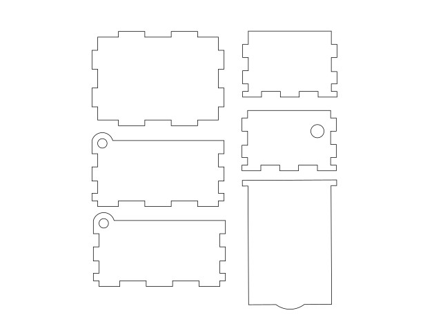

Introduction
Laser cutting works is a process in which a high powered laser is used to melt, burn, or vaporise a material that the user wants to cut. It is commonly used to cut out 2D designs and engraving. In this webpage, I will show you how laser cutting is done through the music box assignment.

Music Box Design
The music box design will be done on Fusion 360.
Here are the parameters used for the Music Box using the parameters function:
Next are the sketches for the base and front sides of the box. The teeth can be sketched using the rectangle command and dimensioned using len/ Nlen. The teeth can be then constrained using a series of coincident and collinear constraints.


Extrude both the base and front by thk before using the combine function to make sure that your teeth dosent join together.


Copy and move the front wall to the opposite side of the box using the Copy/Move (Point to Point) function to make the back wall. Remember to use the combine function again to get the teeth for your back wall.

Sketch and extrude the right wall like this. Calculations for the teeth on the bottom uses width/Nwid and height/Nheight for the sides. Constraints used here are the same as the ones for the front wall.


Copy and move the right wall to the opposite side of the box using the Copy/Move (Point to Point) again to make the left wall and use the combine function to get all the teeth.
Sketch the lid of the music box like this before extruding it by thk.
Sketch the hinge like this before extruding it by thk. Make a 5mm hole centred around the hinge and do the same for the other side.


Use the combine function again for the lid of your box and your done!

Laser Cutting Preperation
Export all the sketchs of the music box as DXF and paste them onto Inkscape.
Change the color of the outline to RGB 255,0,0 (Red). You can also add some engraving using RGB 0,255,0 (Green). In our fablab, the machine recognises Red as cut and Green as engrave.
Additional engravings can also be done by tracing an image in Green in a seperate file. Save your files as SVG, chuck them onto your thumbdrive and head over to the fablab. Once at the fablab, open CorelDraw and import both your files. Make sure to change the width of your lines to hairline.
Resize your second engraving and place it on one of the parts of your music box. Then, send click print where you will be directed to the printing software.
Laser Cutting
Place your music box at the top left hand corner of the screen and proceed to set your settings as shown below.
Engraving (Green)
- Turn on auto focus and air assist.
- Click on the import icon, engrave tab, and select Cherry/Alder/Walnut 300DPI.
Laser Cutting (Red)
- Turn on air assist and set thickness to 3mm.
- Set speed: 15% and power: 86%.
- Click on the import icon, vector tab, and select Plywood (3mm).
Then click on print and press on the green button on the machine to start the laser cutting process!
Here is what the pieces look like once you are done laser cutting and the final assembly look!!!